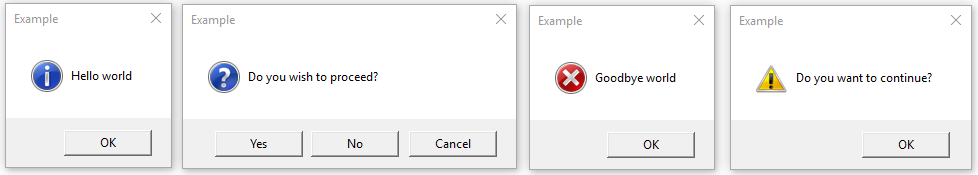

tkinter.messagebox — Tkinter message prompts
Source code: :source:`Lib/tkinter/messagebox.py`
The tkinter.messagebox module provides a template base class as well as
a variety of convenience methods for commonly used configurations. The message
boxes are modal and will return a subset of (True, False, OK, None, Yes, No) based on
the user’s selection. Common message box styles and layouts include but are not
limited to:

- class tkinter.messagebox.Message(master=None, **options)
Create a default information message box.
Information message box
- tkinter.messagebox.showinfo(title=None, message=None, **options)
Warning message boxes
- tkinter.messagebox.showwarning(title=None, message=None, **options)
- tkinter.messagebox.showerror(title=None, message=None, **options)
Question message boxes
- tkinter.messagebox.askquestion(title=None, message=None, **options)
- tkinter.messagebox.askokcancel(title=None, message=None, **options)
- tkinter.messagebox.askretrycancel(title=None, message=None, **options)
- tkinter.messagebox.askyesno(title=None, message=None, **options)
- tkinter.messagebox.askyesnocancel(title=None, message=None, **options)